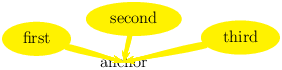

WhizzyTEX*
|
Abstract: WhizzyTEX is an Emacs minor mode for incrementally viewing LATEX documents that you are editing. It works under Unix with gv and xdvi viewers, but the ActiveDVI viewer will provide much better visual effects and offer more functionalities.In addition, when used with ActiveDVI, WhizzyTEX allows for mouse edition of dimensions and floats, which can be used to adjust spaces, move or resize objects visually.
WhizzyTEX is designed for Unix plateforms1.
To use WhizzyTEX, you need Emacs or XEmacs, some standard latex distribution, bash, and at least one DVI, Postscript or PDF previewer, such as advi, xdvi, or dvips combined with gv, or xpdf.
WhizzyTEX has been developed under Linux but has not been extensively tested on other platforms. However, LATEX and Emacs are quite portable and possible compatibility problem with the bash shell-script should be minor and easily fixable. Hence WhizzyTEX should work with all distributions of latex that are compliant to the standard.
Get the source whizzytex-1.3.5.tgz from the distribution, uncompress and untar it in some working directory, as follows:
gunzip whizzytex-1.3.5.tgz
tar -xvf whizztex-1.3.5.tar
cd whizzytex-1.3.5
Then, the installation can be automatic (default or customized), or manual.
Many Linux installations make xdvi a shell-script that erroneously
end with the line xdvi.bin "$@" instead of
exec xdvi.bin "$@". The later is needed to preserve the process
id, so that signals sent to xdvi are correctly received and
handled by xdvi.bin.
Since correct signal handling is crucial for WhizzyTEX, and this problem is so common we provide a script to check your configuration with the command
./checkconfig
By default, this check is performed by automatic installation below.
To customize the installation, you can edit
Makefile.config, manually.
You may also use either the command
./configure
This command may be passed arguments to customize your installation.
Call it with the option -help to see a list of all options.
By default, the configuration is not interactive. However, you may call it
with option -helpme to have the script do more guessing for you and
prompt for choices if needed.
Note that by default, the Emacs-lisp code whizzytex.el is not
byte-compiled. You need to pass the option -elc to configure in
order to byte-compiled it.
A misconfiguration of your installation, or —much more subttle— a
misconfiguration of other commands (it appears that some installations wrap
scripts around standard commands that are sometimes incorrect and break
their normal advertized interface) may lead to systematic errors when
launching WhizzyTEX. To prevent delaying such obvious errors, some sanity
checks are done after Makefile.config has been produced and before
building other files. These include checking for mandatory bindings (useful
for manual configuration) and for the conformance of initex, latex, and viewers commands to their expected interface.
Checking viewers interface implies simulating a small WhizzyTEX session: a small test file is created for which a specializled version of latex format is built and used to run LATEX on the test file; finally, required viewers are tested on the DVI output, which opens windows, temporarily.
If the sanity check fails, at least part of your configuration is suspicious. If some windows remain opened, your confirguration is likely to be erronesous (and so, even if not detected by the script).
However, if you really know what you are doing, you may bypass the check by
typing make config.force, which will stamp your Makefile.config
as correct without checking it. Checking compliance to viewers interface
is also bypassed if you you do not have a connection to X. Conversely, you
may force checking manually by typing ./checkconfig.
At the end of customization, proceed as described in Section ??.
By default, WhizzyTEX assumes the standard convention that
latex is the command name used to call LATEX,
initex the command name used to build a new format, and
latex is the predefined latex format.
If your implementation of LATEX uses other names, you may redefine the
variables INITEX, LATEX, and FORMAT accordingly in the
file Makefile.config.
For instance, platex could be use the default configuration
INITEX = iniptex
LATEX = platex
FORMAT = platex
BIBTEX = jbibtex
This would be produced directly with the configuration line:
./configure -initex iniptex -latex platex -format latex -bibtex jbibtex
If you wish to run WhizzyTEX with several configurations, you must still choose a default configuration, but you will still be able to call WhizzyTEX with another configuration from Emacs (see Section 5.2 below).
It is possible to load this setup dynamically by creating, for example, by including the following lines:
INITEX = iniptex
LATEX = platex
FORMAT = platex
BIBTEX = jbibtex
in a configuration file (see Section 5.2).
During the configuration, you must at least choose one default previewer
type among advi, xdvi, and ps, and at most one default
previewer for each previewer type you chose. You will still be able to call
WhizzyTEX with other previewers from Emacs, via Emacs configuration (see
Section
5.1).
Since WhizzyTEX only need three files to run, installation can also be done manually:
This could be installed in a directory visible by Emacs, but does not need to, since you can always use the full path when you load it or declare autoload.
No default location.
This file is a bash-shell script that should be executable. There is not reason to have it visible from the executable path, since it should not be used but with WhizzyTEX.
The variable whizzy-command-name defined in whizzytex.el contains its full path (or just its name if visible from the executable path).
Default value is /usr/local/bin/whizzytex
You may need to adjust the path of bash in the very first line of the
script, as well as some variables in the manual configuration section of the
script.
This file are latex2e macros. There is no reason to put this visible from LATEX path, since it should not be used but with WhizzyTEX.
Variable PACKAGE defined in whizzytex the full path (or just the name if the path is visible from LATEX.
Default value is /usr/local/share/whizzytex/latex/whizzytex.sty
For convenience, the distribution also offers a facility to download and
upgrade new versions of WhizzyTEX (this requires wget to be
installed). If automatic upgrading does not work, just do it manually.
All operations should be performed in the WhizzyTEX top directory, i.e. where you untar whizzytex for the first time, that is right above the directory from were you made the installation. We assume that have created a link to the current version subdirectory:
ln -s whizzytex-1.3.5 whizzytex
(the manager will then update this link when version changes). Alternatively, you can also use the full name whizzytex-1.3.5 in place of whizzytex below. The main commands are:
make -f whizzytex/Manager upgrade
make -f whizzytex/Manager install
The command upgrade will successively download the newest version,
unpack it, copy the configuration of the current version to the newest
version, and bring the newest version up-to-date. The command install
will install files of the newest version.
The following command will (re-)install an old version:
make VERSION=<version> download downgrade install
Maybe, whizzytex is already installed on your (X)Emacs system, which you may check by typing:
ESC x whizzytex-mode RET
If the command is understood, skip this section.
Otherwise, you should first load the library whizzytex.el or, better,
declare it autoload. To do this permanently, include the following
declaration in your Emacs startup file (which probably is ~/.emacs if
you are using Emacs):
(autoload ’whizzytex-mode
"whizzytex"
"WhizzyTeX, a minor-mode WYSIWIG environment for LaTeX" t)
This asumes that whizzytex.el has been installed in your (X)Emacs
load-path. Otherwise, you may either adjust the load-path
appropriately, or replace whizzytex by the full path to the file
whizzytex.el, which depends on your installation and can be
obtained by typing make where in the installation root directory. For
instance, if you are using Emacs, the default location for
whizzytex.el is
/usr/local/share/whizzytex/lisp/whizzytex.el (but it will be different
if you are using XEmacs or a customized installation).
WhizzyTEX runs as a minor mode of Emacs to be launched on a LATEX Emacs
buffer. The extension of the buffer should be
.tex. WhizzyTEX also understands .ltx extensions, but gives
priority to the former when it has to guess the extension. Other extensions
are possible but not recommended.
The file attached to the buffer must exists and either be a well-formed
LATEX source file, or be mastered, i.e. loaded by another
LATEX source file. Thus, whenever the buffer does not contain a
\begin{document} command), WhizzyTEX will search for its master file,
asking the user if need be, so as to first launch itself on a buffer
visiting the master file. In particular, an empty buffer will be considered
as beeing mastered, which may not be what you intend.
To start WhizzyTEX on either kind of buffer, type:
ESC x whizzytex-mode RET
By default, this should add new bindings so that you can later turn mode on and off with key strokes C-c C-w. This will also add a new menu Whizzy in the menu bar call “the” menu below. (If you are using the auctex, your may use other configuration key strokes to avoid clashes (see online emacs-help).
When whizzytex-mode is started for the first time on a new buffer, it attempts to configure buffer local variables automatically by examining the content of file, and using default values of global bindings.
You may customize default settings globally by running appropriate hooks or locally by inserting appropriate comments in the source file —see the manual below.
You may also change the settings interactively using the menu, or tell
whizzytex-mode to prompt the user for confirmation of file configuration by
passing prefix argument 4 (using, for instance, key sequence
C-u C-c C-w).
Once whizzytex-mode is on, just type in as usual. WhizzyTEX should work transparently, refreshing the presentation as you type or move into your LATEX buffer.
Additionally, a gray overlay is put outside of the current slice (the slice is the region of your buffer under focus, which is automatically determined by WhizzyTEX). When a LATEX error occurs and it can be localized in the source buffer, a yellow overlay also is put on the region around the error, and removed when the error is fixed.
Furthermore, when an error is persistent for several slices or some amount of time, the interaction-buffer will pop up with the error log (this option can be toggled with the Auto interaction menu entry).
The buffer mode line also displays a brief summary of
WhizzyTEX’s status. When whizzytex-mode is on, the line contain
Whizzy.n where n is a numeric indication of the load in number
of buffer changes between two slices (so the higher, the slower).
However, Whizzy.n is changed to Whizzy-e where err range
over FORMAT, LATEX, or SLICE an indicates that while
formating or LATEXing the full document, or while recompiling the current
slice. Errors have priority in this order. That is, if there is both an
error in the format and the slice, only the FORMAT error will be
repported.
When a SLICE error occurs, emacs attempts to locate the error
and overlay the region that caused the error. (This identifies the
text around which the error was detected by LATEX, which may not be the
text that caused the error.) One can jump to the current error location by
calling the Jump to error menu emty (or the equivalent key
sequence).
WhizzyTEX makes a good attempt at doing everything automatically. However, there remain situations where the user need to understand WhizzyTEX —when WhizzyTEX does not seem to understand the user anymore.
Quite often, the error overlay is sufficient to fix a latex source error. Actually, the error overaly may just indicate that you are in the middle of typing a command or an environment, in which cases WhizzyTEX will indicate temporarily report an undefined command or and ill-balanced environment. Whether an overlay is ephemerous and mean an incomplete edition or persistent and mean a real LATEX error is usually unambiguous. In addition, because WhizzyTEXing is dynamic and the error is repported immediately it is usually easier to fix a real error than it would be in a batch compilation, and without even looking at the error message.
Indeed, WhizzyTEX also display the LATEX error message
(and other processsing messages) in its interaction buffer.
The interaction buffer is named from the master file name surrounded
by * characters. By default, the interaction buffer appears
in a pop up window a few seconds after an error persists and is pop down
when the error disapears.
For serious debugging, you may unset Auto interaction menu entry so as to see the interaction buffer permanently. You may also unset Auto Shrink output menu entry to keep all log information (by default, the interaction window is shrunk at every slice).
The View Log... menu entry can be used to view the compele log files of
last actions performed by whizzytex (format, latex,
slice).
The most delicate part of WhizzyTEX is when starting whizzytex-mode, and usually for the first time in a new buffer, since at that time all kinds of initialization errors may occur (in addition to LATEX errors.
WhizzyTEX will attempt to identify the error and report appropriate messages in the interaction buffer. (In case an error occurs —or nothing happens— always have a look at the interaction buffer first, even if it did not prompt automatically.)
WhizzyTEX keeps more debugging information during initialization phase, and if an error occurs during initialization, it will keep all log files. Once initialization has succeeded WhizzyTEX turns into normal more and by default all log and auxiliary files will be removed error et exit (including at exit on error). However, WhizzyTEX can also be launched in debug more, which will keep additional debugging information including after initialization.
To see log information, use the View log... menu entry
and the completion buffer. Available log files are command,
format, latex, slice, and view.
The command log is simple the list of arguments—one per line—with which
the shell script whizzytex was called; the log file view is the
content of the standard error description the viewer. Some logs may not be
available if an error occured before the corresponding command has been
called.
Most frequent errors are described below, in chronological order.
This is the easiest case, because WhizzyTEX has not been called yet, so it
is only involves debugging under emacs.
You may check the emacs error messages (emacs buffer *Messages*),
check the on-line documentatino of variables set or functions calls, and
in case of uncaught fatal errors, you may
ESC X toggle-debug-on-error to get help from Emacs, and try to fix
the problem.
Note that setup may succeed, but not be result as expected.
You may see what configuration files have been loaded in different buffers:
*Message* for emacs customization, the interaction buffer
for shell-script customozation, and the format log file for latex
configuration.
This should typically be an installation problem, where the variable
whizzytex-command-name is erroneous (maybe you need to give the full
path). Try to evaluate (shell-command whizzy-command-name) in the
minibuffer, which of course should fail, but only after the command has been
reached.
Then WhizzyTEX will refuse to start.
The problem could result from an abnormal interaction between your macros and WhizzyTEX macros, but this situation seems rather unfrequent. So there is most probably an error in your macros. Try to compile LATEX your file.
By default the interaction window will pop-up with an section of the format log, but you can also view the log of latex formatting
. If this is not enough, you may need view log files. However, log
files are normally removed when WhizzyTEX exits. To keep log files on,
you must retart WhizzyTEX in debug mode (select the debug mode in the
menu and restart WhizzyTEX). Then, you can check the format log and
if necessary the command with which WhizzyTEX has been launched.
(Once the bug is fixed, you should switch off the debug mode, which may slow
down WhizzyTEX.)
Usually, this is because whizzytex received wrong previewer parameter. See
the command echoed in the interaction buffer or try to evaluate
(whizzy-get whizzytex-view-mode).
There are two remaining problems that could happen at launch time, but that are not particular to launch time: WhizzyTEX could not recompiled the whole document or the current slice. However, these should not be fatal. In the former case, whizzytex will proceed, ignoring the whole document (or using the slice instead if you are in duplex mode). In the later case, whizzytex will replace the slice by an empty slice —and print a welcoming document, as if you launched WhizzyTEX outside of any slice.
After initialization time, WhizzyTEX will keep recompiling slices as you type or move, but also recompiles the format and the whole document when you save a file. Each of this step may failed, but this should not be fatal, and Emacs should report the error, possible pop up the interaction window, and continue.
This should not be considered as an error, it must happen during edition. In particular, WhizzyTEX is not much aware of LATEX and could very well slice in the middle of the typesetting of an environment or a macro command. This should not matter, since the erroneous slice will be ignore temporarily until the slice is correct again.
The slice can also be erroneous because the Emacs did not correctly inferred where to insert the cursor, which may slice erroneous, although what you typed is correct. Hopefully, this will not occur too often, and disappear as you move the point. It should also disappear if you switch off both Point visible and Page to Point options, which is actually a good thing to do when you suspect some misbehavior. This will make WhizzyTeX more robust, but less powerful and more boring.
The interaction window does not produce any output. Try to move in the slice, or to another slice.
If nothing happens, check the interaction
window, to see if it did attempt to recompile the slice.
If nothing happens in the interaction window, check for Emacs messages
(in the *Messages* buffer). You may also check for the presence
(and content) of the slice by visiting
_whizzy_filename.tex or
_whizzy_filename/input/_whizzy_name.new
If neither file exists, it means that Emacs did
not succeed to slice, which you may force by evaluating
(whizzy-observe-changes t).
This can be run in even if whizzytex-mode is suspended, which may
avoid automatic processing of slices, and their erasure.
If the slice is present, you may try to compile it by hand (outside of Emacs) with
latex '&_whizzy_filename' _whizzy_filename.tex
and see if it succeeds.
Formatting errors are fatal during initialization, but accepted once
initialized. In case of an error during reformatting, WhizzyTEX will ignore
the error and continue with the old format. This means that new macros may
be ignored leading to further slicing errors. When rebuilding the format
failed, the mode-line string will display the suffix FMT until the
error is fixed. See the interaction buffer or select format from the
log... menu entry).
You may also force reformatting by typing the reformat command
in the interaction buffer.
This is very likely a problem with you document, so try to LATEX it first. There is a small possibility of strange interaction between your macros and WhizzyTEX package. Try to turn options Page to Point and Point visible off and retry. This will make WhizzyTEX more robust (but also less powerful and more boring).
If you are still completely lost after trying all of the above help, you may turn on the debugging mode by typing either line in the interaction window:
trace on trace off
or with the menu entry Debug.
The entry can also be called to start WhizzyTEX, which will then start in
debugging mode, including during initialization.
If need be, you can also turn emacs debug mode on and off with
ESC x toggle-debug-on-error RET
If you are still stuck, then you are left on your own and need real debugging. If this is your first attempt at WhizzyTEX, you should suspect your global configuration. You should then try it first with the examples of the distribution. Otherwise, you may rollback to a file and configuration that used to work (e.g. one of the distribution), and make incremental or logarithmic changes until you hit the problem.
The Emacs source is fully documented and most of the documentation is
available as on-line Emacs help, through the Help entry of the
Whizzy menu and following hyperlinks.
Alternatively, you can type
ESC x describe-function RET whizzytex-mode RET
(In XEmacs, you may need to use
ESC x hyper-describe-function RET whizzytex-mode RET
instead of describe-function to see hyper-links.)
To avoid redundancy, on-line help is not reproduced here, configuration described in the next section.
This section describes how to use and parameterize WhizzyTEX. Section 5.2, 5.3 and 5.4 are also available as online help.
See Emacs help for whizzy-default-bindings and
whizzytex-mode-hook for list of bindings.
The Emacs on-line help for whizzytex-mode lists all user-configurable
variables, which may be given default values in your Emacs startup file
to be used instead of WhizzyTEX own default values.
WhizzyTEX allows for inlined customization in the source file, as described below. While this mecanism is quit convenient for short and simple customization (such as selecting the output format and previewer or sectioning), it is harsh and depreciated for advanced customization, for which you should prefer local customozation files (see Section 5.11).
A configuration line is one that starts with regexp prefix “^%; +”
followed by a configuration keyword. If two configuration lines have the same
keyword, only the first one is considered. The argument of a configuration
line is the rest of the line stripped of its white space.
The keywords are:
") stripped off, so that "foo.tex" and foo.tex are equivalent.-advi, -xdvi, -ps, or -pdf (see section 5.4)mv is used to move the original to the
destination. (See the example in ./examples/gpic/)The Unix make can itself be used as a preprocessor (with an
appropriate Makefile). However, one may have to work around
make’s notion of time (using FORCE), which is usually too rough.
This is safe, since WhizzyTEX tests itself for needed recompilations.
uses ⟨bibtex⟩ for the bibtex command instead of the value
assign to BIBTEX in Makefile.config (or whizzytex)
uses ⟨initex⟩ for the initex command instead of the value
assign to INITEX in Makefile.config (or whizzytex)
uses ⟨latex⟩ for the latex command instead of the value
assign to LATEX in Makefile.config (or whizzytex)
uses ⟨format⟩ for the latex format instead of the default value, usually fmt (see configuration).
This can either be used in combination with -latex and
-initex,
or alone. For instance,
hugelatex could be used (depending on your LATEX configuration) to
build a larger format to process huge files.
uses ⟨command⟩ instead of the default (mv) to copy DVI files
(from FILE.dvi to FILE.wdvi). This can be used with command
dvicopy so as to expand virtual font, which advi does not understand
yet)
With -advi previewers, both views communicate with Emacs and can be
used to navigate through source buffers and positions.
For instance, a typical configuration line will be:
%; whizzy subsection -dvi "xdvi -s 3"
It tells whizzytex to run in subsection slicing mode and use a dvi
style viewer called with the command
xdvi -s 3. This is also equivalent to
%; whizzy subsection -dvi xdvi -s 3
since Emacs removes outer double-quotes in option arguments.
A more evolved configuration line is:
%; whizzy -mkslice make -initex iniptex -latex platex -fmt platex
It tells WhizzyTEX to use iniptex and platex comands instead
of initex and latex and to use the format file platex.fmt
instead of latex.fmt. Moreover, it should use make to preprocess
the slice.
whizzy-paragraph to regexp.
WhizzyTEX recognizes several modes,
slide,
section,
subsection,
paragraph,
document, and
node, described below.
The mode determines the slice of the document being displayed and indirectly the frequency of slicing.
Note that in any mode but none slices are always included in the file
beeing editing or other files included. When slice delimitors are not
found, the slice default to the whole file. The slice may also be empty if
the cursor is located before \begin{document} or after
\end{document}.
The mode slide is mainly used for documents of the class seminar.
In slide mode, the slide is the text between two \begin {slide}
comments (thus, the text between two slides is displayed after the
preceding slide).
In slice modes, overlays are ignored i.e. all overlays all displayed in
the same slide, unless a command
\overlay {n} occurs on the left of the point, on the same line
(if several commands are on the same line, the
right-most one is taken), in which case only layers p ≤ n are displayed.
section mode, the slice of text is the current chapter, section.section but also slice at subsections. paragraph mode is a variation on section mode where, the separator
whizzy-paragraph is defined by the user (set to two empty lines by
default) instead of using \section and \subsection commands.
subsection.document take the region between \begin{document}
and \end{document} as the slice. Hence it defaults to the file
when the file is a slave, which does not contain \begin{document}. none slicing mode, there is no sectioning unit at all and
the whole document is recompiled altogether.
Currently, pages are not turned to point and the
cursor is not shown as in document mode, because full documents are not
sliced. (A slicing document mode could be obtained by working in paragraph
mode, with an appropriate regexp.)See help for whizzy-viewers.
The previewer types can have three possible values: -advi, -dvi, -ps, or -pdf.
The previewer type should agree with the previewer command in several ways:
In particular, if you write a front-hand shell-script viewer to the
call previewer, and want to use viewer as the previewer, you should
arrange for viewer to understand these signals (and forward them to the
previewer). The simplest way is to hand your script with an exec command
calling the gv, dvi or advi.
Also, the option -pdf assumes xpdf remote server (launched with the whizzytex process id as name) and its reload protocol. Thus, if you wish to use another previewer, you also need to cutomize the variable RELOAD of the shell-script.
\special commands, in particular
source line information of the form:
#line 780, 785 <<to<<rec>><<ognize>>additional>> manual.tex
Then, the previewer command is the command to call the previewer. This
string will be passed as such to the WhizzyTEX shell-script. Note that the
name of the dvi or postscript file will be appended to the previewer
command.
This is preferable to file-based configuration.
WhizzyTEX also recognizes configuration files
whizzy.sh, whizzy.sty, whizzy.el
in either your home directory or the current working directory.
File whizzy.sh is read by the script whizzytex after some defaults values (usually determined by the configuration) have being assigned to variables. Hence, it can be used to redefined those values.
Here are typical default values that can be redefined.
|
See whizzytex for other bindings. Other shells environment values such as TEXINPUTS may be defined here as well.
File "whizzy.el" is read by emacs when turning the whizzytex mode on for the first time. File "whizzy.sty" is read by latex every time the document is reformatted.
You may also use files
⟨ masterbasename⟩.wsh,
⟨ masterbasename⟩.wel,
⟨ masterbasename⟩.wsty,
in the current working directory to only load the file when
running whizzytex on the master file ⟨ masterbasename⟩.
WhizzyTEX is designed to watch other files and not just the slice saved by Emacs. In fact, it watches any file dropped in the pool directory. For instance, if your source file uses images, you can just change the image and drop the new version in the pool. Then WhizzyTEX will pick the new version, move it to the working directory and recompile a new slice. Be aware of name clashes: if you drop a file in the pool, it will automatically be move to the working directory with the same name, overriding any file of the same name sitting there.
However, activity is entirely controlled by Emacs, since after every iteration WhizzyTEX waits for Emacs to send a new command (usually the empty command that means iterate again). Hence, other files will only be taken into account at the next iteration. If you really wish these files to be watched you need to instrument emacs to send and empty line input to the interaction buffer regularly, even when idle.
To obtain maximum WhizzyTEX effect, a new slice should be save after any
edition changed or any displacement that outside of the current slice.
However, to avoid overloading the machine with useless and annoying
refreshments, some compromise is made, depending on Emacs several
parameters: edition v.s. move Emacs last commands,
successful v.s. erroneous last slice, and the duration of last slice
recompilation. This usually works well. However, different behavior may wish
to be obtained in different situations. For instance, when editing on a
lab-top, one may wish to save batteries by keeping the load rather low, hence
not using the full power of the processor. Conversely, one may wish
WhizzyTEX to be as responsive as possible. There is an function
whizzy-load-factor that control a variable of the same name, which can
be used to adjust the responsiveness (by increasing or decreasing the
load-factor). This simply adds extra delays between slicing.
The format is automatically recompiled at the beginning of each session, and
whenever the buffer containing the file is saved. That is, to load new
packages or define new global macros (before the \begin{document}), it
suffices to save the current file.
Macro files can be WhizzyTEX-ed as well. The effect is them only to
automatically call reformat when the file is saved.
Files can also be declared as macro-files with
whizzy-macro file configuration keyword (see Section 5.2), which argument should then indicate the master file.
Files with .sty extension are by default considered as macro files
and their master file is guessed if possible.
The slice is always recompiled with the .aux file of the whole
document. In paragraph mode, cross references and section numbers are
recompiled whenever the buffer itself is saved (manually).
The recompilation of the whole document is off in slide mode.
The Emacs variable whizzy-customize (that can be set
interactively from the Customize slice menu) may contain
a few LATEX commands to be inserted at the beginning of each slice, which
allows a per-session customization. Customization can be easily changed
anytime in the middle of a session. For instance, setting this variable to
\large can be used to temporarily enlarge the text, while keeping the
same page layout.
WhizzyTEX is a three-part engine, with Emacs, Latex, and the glue
Bash-script running altogether. Some of the parameters can be adjusted at
installation-time by modifying the respective files whizzytex.el,
whizzytex.sty, or whizzytex of the distribution. However, you
should normally not have to do that after installation (and even only
exceptionnally during installation), and instead use system, user, or local
configuration files.
When launched, each engine looks for configuration files in appropriate
directories with basenames whizzy.el, whizzy.sh,
whizzy.sty and whizzy.cfg, respectively. The Emacs configuration
search path is defined by the emacs variable variable
whizzy-configuration-path. Search path for Bash and Latex settings
are composed of the directories CONFIGDIR/, $HOME/.whizzytex/
and the current directory (actually $TEXINPUTS for latex). All
configuration files found are loaded, in the order given above.
The difference between whizzy.sty and whizzy.cfg is that the
former is loaded after all latex packages and typically use to change the
behavior of those packages while the later is loaded first,
before \documentclass and is rather use used to redefined
commands of "whizzytex" or defined extra macros before loading the
document (e.g. as arguments that could normally be defined on the
commandline while calling latex).
Remark that a local configuration file (i.e. one in the current directory) can be used to make per-document configuration by testing on jobname.
ActiveDVI is a DVI previewer with several additional features. In particular, it recognizes extra specials, some of which are particular useful for whizzytex that allows a two way communication between the source Emacs buffer and the previewer:
Start-Document whenever possible.
Then, just tell ActiveDVI to automatically jump at this location
when it opens/reloads the file (option -html Start-Document).shift-mouse-1 or mouse-1 in
edit mode), that
is forwarded to Emacs so that it can move to the corresponding line.To enjoy this feature, the option -advi should be used instead of
-dvi. This will produce extra information (such as source line
numbers) using \special that most DVI previewers do not recognize
and may complain about.
dvicopy
can be used to expand them. See the option -dvicopy in Section 5.2. MULTIPLE is set to true in
Makefile.config). In this case, WhizzyTEX will call the previewer both
the slice and the whole document in the same window and may automatically
switch from the slice to the whole document when clicking on local hyperrefs
that are out of the slice (press Esc to come back). You can also
switch between views by pressing w and when on the whole document
view, goto the page when the cursor is in Emacs by pressing W. Warning! If by mistake or misconfiguration, the multiple view is enable and your version of advi does not support multiple views, you will only see the full document view and never see the slice.
To use your own command as a previewer, you must choose either type
-dvi or -ps . In particular, your previewer should
accept SIGUSR1 (for -dvi) signal or SIGHUP (for -ps)
signal and respond by reloading the file.
WhizzyTEX also works with pdf using the xpdf previewer
and its remote server capabilities to reload the file and jump to the
cursor position (this does not work with acroread because they is no
simple way to tell
acroread to reload its file in batch). You must choose -pdf
as previewer type, which will also set other variables so as to compile the
document with pdflatex instead of latex. You must leave the default
previewer command, i.e. enter -pdf . and not -pdf xpdf (or else
understand the internals of the whizzytex script) because
other options need to be passed to xpdf.
When compiling with pdflatex, you need to explicitly use the package
hyperref.
Another solution is to compile via the generation of a Postscript file
ps and its translation to PDF using ps2pdf.
This allows the use of pstricks. In this case, you tune the
configuration manually, following the example given in examples/ps2pdf/.
Since WhizzyTEX knowns about the current point in the buffer, rendering of the document may depend on that possition. For examples, an environment may be displayed differently when the point is inside or outside the environment. A natural choice is to make drawer-like environments that are closed when the point is outside and open when the point is inside.
WhizzyTEX provides a the macro \WhizzyInsideEnvironment
to help make such effects. It takes the same parameters as the command
\newenvironnement. The first argument should be the name of an
existing environment, which will behave as before when the point appears
outside and according to the new definition when the points is inside. The
second and first arguments defines the behavoir as do the arguments of
\newenvironment. However, \WhizzyInsideEnvironment also defines
the macro \out@myenv and endout@myenv to refers to the
cursor-outside version of the environment. Typically, these macros can be
used in the second and third argument of \WhizzyInsideEnvironment to
define the cursor-inside version by difference with the cursor-outside
version.
The example effects shows two applications. First, a drawer
environment is used to delimit sections and make them open or closed
automatically as cursor moves. Second, using the
exercise package, we provide a cursor-inside version of the answer
environment that inline the answer rather than pushing it to the Appendix.
This feature requires at least version 1.60 of ActiveDVI.
When used together with Active-DVI, WhizzyTEX can be made much mode powerful. In particular, it is not difficult to lift WhizzyTEX from an incremental viewer to an assistant editor.
What was a dream has now become real.
The latest version Active-DVI provides a notion of active boxes.
The DVI may be annotated with advi: edit specials commands.
When ActiveDVI is put in edition mode,
active boxes are drawn on top of the previewer window and can be move or
resized with the mouse.
When the mouse is released, the new size or position is printed on standard
output together with the action to be taken and received by emacs watching
the output.
Emacs has then enough information to adjust some dimensional parameters in
the source buffer. Just after this edition, the new slice is processed and
the new position is displayed. Thanks to the short incremental loop, this
almost appears as if actions where executed by Active-DVI itself.
Indeed, WhizzyEditing is not meant to break up the structual edition philosophy of TEX and LATEX. Its incremental viewing is an assistant to an not a replacement of structural source edition. Mouse editing should also be seen similarly. In particular, all editions are visible in the emacs source buffer, can be saved, manually changed or disable. Moreover, Whizzy-editing is not meant for document layout (even it can occassionally be used for that, e.g. in slides), but rather to help adjust dinmensions that require manual tuning.
For instance, imaging you are importing an Encapsulated Postscript picture you would like to place some bubble whose origin must be position precisely inside the picture. Then, you’d better do it with the mouse rather than by small measurements or adjustements. Drawing a graph with a few nodes may now become quite confortable with PStricks, with the advantage of remaining within LATEX rather than using some external tool. Finally, Whizzy-editing is likely to be convenient when writting slides with visual gadgets. For instance, adjusting bubbles with the mouse is likely to be more efficient than doing it by hand.
ActiveDVI provides one general editing command that can be used by WhizzyTEX for all mouse editing. The syntax of this command is
\adviedit[tag]{⟨ options⟩}{⟨ body⟩}
where ⟨ options⟩ is a comma separated list of bindings according to the keyval package. Each binding is either of the form ⟨ var⟩=⟨ float⟩ where ⟨ var⟩ ranges other letters x, y, h, w, d in lowercase or uppercase, or field=⟨ dimension⟩ where ⟨ field⟩ ranges over ⟨ unit⟩ and ⟨ min⟩.
The ⟨ field⟩ respectively bindings specifies the unit, which default to 1em, and the minimal dimension of boxes. Both fields are inherited, which enable inner edition to be scale altogether. The ⟨ var⟩ bindings defines values for the corresponding variables. The are not inherited. On the opposite, they are always reset to default values. Lowercase letters mean that the corresponding variables are whizzy-editable, while uppercase letters treat them as constants. The expression body should be horizontal box material: it is then placed in an \hbox at coordinates (x, y) relatively to the current position. Moreover, a virtual box of width w, height h, and depth d is draw at that position when editing is made active. The box can this float around the current point and has no dimension. However, a box with no coordinates specified is fixed and has the dimensions of w, h, and d. When not specified, these fields takes the value of the box in which body is typeset. All dimensions x, y, w, h, and d are bound to advix, advix, adviy, adviw, advih, and advid macros during the evaluation of ⟨ body⟩.
Whizzy-editable objects can be nested. All parameters are reset to default values, within the new object. Sometimes, emacs may be confused and take an object for another. In these rare cases, the two objects can use the ⟨ tag⟩ argument to be distinguished. This argument does nothing but being passed to ActiveDVI and sent back to Emacs to identified the object exactly.
This section depends entirely on ActiveDVI. Hence, it may depend on your version of ActiveDVI or how you have parameterized it. The appearance and description below is based on default bindings for version 1.50+3.
To actually edit whizzy-editable objects, you need to toggle the
edit mode of ActiveDVI. You can do this interactively by key stoke
e in the ActiveDVI window. You may also start ActiveDVI in
edit mode by passing the option -edit.
When in edit mode, whizzy-editable objects are drawn as below:
You may edit such objects in two ways:
When pressing the button on the corresponding rectangle, the mouse shape should intuitively illustrate the action to be perfomed. However, some actions may be inhibited. For instance, the \parbox can only be moved or resized in width and the vertical space can only be resized in depth but not be moved. When an action (either move or resize) is disable in all directions, the cursor will not changed. When resizing is enabled both in height and in depth, the default action is height and you must press the shift key to perform the depth resizing.
Finally, an edition can be aborted by pressing the meta key (actually the one bound to modifier-1) while release the mouse.
Several examples can be found in file example/edit/main.tex coming with ActiveDVI distribution. Here are a couple of simple ones. For example,
\adviedit{x=-2.8845,y=0.2717}{A}
will simply place make the letter A whizzy-movable. The values of x and y when unspecified defaults to 0. Values for W, H or D when not given, will default to the value of A. However, if W, H, or D are zero (or too small) they will default to some small value.
\adviedit{X=2,Y=3}{A}
can simply be used instead of the latex \put command. Spaces are also whizzy-adjustables: an horizontal space is just
\adviedit{w}{\hspace{\adviw}}
Note that the material is placed into a default \hbox. Thus, for vertical spaces, one need and explicit \vbox:
\adviedit{d}{\vtop {\vspace {\advid}}}
Note that
\adviedit{h}{\vbox {\vspace {\advih}}}
would do as well, but would usually be less intuitive, graphically.
A paragraph of adjustable size:
\adviedit{w}{\parbox[c]{\adviw}{text material}}
Whizzy-edition can also be used to resize images (as well as return them)
\adviedit{w,h}{\includegraphics[width=\adviw,height=\advih]{caml.eps}}
Note that while \adviedit must remain in the should, hence the whole line cannot be abbreviated into a macro, one can freely abbreviate its body, and it is quite easy to build a camel caravan:
\adviedit[A]{w,unit=\hsize}{%
\setedit{unit=0.2\adviw}%
\def \camel{\includegraphics[width=\adviw,height=\advih]{caml.eps}}%
\adviedit{x,y,w,h}{\camel}%
\adviedit{x,y,w,h}{\camel}%
\adviedit{x,y,w,h}{\camel}%
\adviedit{d}{\vtop{\vspace\advid}}%
\hspace{\adviw}%
}
Be aware that a camel may hide another one! Indeed, at the beginning all camels are superposed. The first caml you pick is the one in front. An interesting use of units is to let an inner editable command sets its unit according to the dimension of an outer command, as illustrated above. Here the outer object (tagged A) is used to control the origin and scale of the projection. Then, each camel can be translated and resized, but relatively to this origin and this scale. Thus moving of rescaling the outer object will treate the caravan as a whole. The last line allow expansion of the bounding box as needed. The one before last sets the vertical ratio of the bounding box. The result can be seen in Figure 1.
Below is another example with two circles:
\adviedit[A]{w=4}
{\setedit{unit=\adviw}%
\psset{boxsep=0pt,framesep=0pt}%
\hbox to \adviw
{\circlenode{A}{\hspace {\adviw}}\hss
\adviedit[B]{w=0.5}{\circlenode{B}{\hspace{\adviw}}}}}
Many LATEX commands such as \hspace, \parbox, etc. are parameterized by dimensions. However, some other commands, such as \picture, \pspicture and most PsTricks commands, \bubble, and \adviedit itself are parameterized by a coefficients (floats) and, separately, a dimension.
To whizzy-edit such coefficients, there are also commands \advicx, \advicy, \advicw, \advich, and \advicd that contain the float ratio of the corresponding dimension with respect to \adviunit—whenever the dimension is itself defined. As an example, the position of bubble can whizzy-edited as follows:
\adviedit{h=1.8902,w=1.5259,unit=\bubbleunit}
{\bubble{anchored text}(\advicw,\advich){bulle text}}
Although the command \whizzyedit is quite general and powerful, the user may wish to write its own versions. One must then be careful that the macro correctly passes its name to ActiveDVI. For instance, rebinding or partially evaluating the macro \adviedit does not work, since then the text-source macro will not be \adviedit anymore. See the latex advi.sty source package for envolved examples.
Below are just a couple of simple examples. We can abbreviate the example of adjustable horizontal spaces defining the following macro:
\newcommand{\advihspace}[1]
{\adviedit{comm=\advihspace,#1}{\hspace{\adviw}}}
The argument comm=\advihspace set the name of the calling source text
macro to \advihspace. Then, you may simply write:
\advihspace{w}
instead of
\adviedit{w}{\hspace{\adviw}}
The macro could additionally check that w is indeed defined.
Another example of specialization is to place bubbles: so as to be more intuitive, the orgin of the edition should start at the center rather then at the left of the anchor, which requires a small acrobatics with boxes and dimensions:
\newcommand{\editbubble}[3]
{\setbox0=\hbox{#2}\copy0\hbox to 0em {\kern-0.5\wd0\relax
\bbb@dima=\ht0\bbb@dimb=\dp0
\setbox0=\null\ht0=\bbb@dima\dp0=\bbb@dimb
{\adviedit{comm=\editbubble,unit=\bubbleunit,#1}
{\bubble{\box0}(\advicw,\advich){#3}}}\hfilneg}}
Then a nicely editable bublle can be obtained with
\editbubble{w,h}
{\editbubble{w,h}
{\editbubble{w,h}{flowers}{First}}
{Second}}
{third}
(See the result in Figure 2)

In short, WhizzyTEX is selecting a small slice of the document that you are editing around the cursor (according to the selected mode) and redisplay the slice incrementally as it changes through edition.
The rest of this section briefly describe these three parts2, and their interactions.
The main trick is to use post-command-hook to make Emacs watch
changes. It uses buffer-modified-tick to tell if any editing has
actually occurred, and compare the point position with the (remembered)
position of the region being displayed to see if saving should occur. It
uses sit-for to delay slicing until at least the time of slice
computation has ellapsed since last saving, a significant number of editing
changes has occurred, or iddleness.
WhizzyTEX can also display the cursor position, in which case slices are also recomputed when the cursor moves, but with lower priority.
The main TeX trick is to build a format specialized to the current document so as to avoid reloading the whole macros at each compilation. This is (almost3) entirely transparent, that is, the source file does not have to understand this trick.
This is implemented by redefining \documentclass which in turn
redefines \document to execute \dump (after redefining
\document to its old value and \documentclass so that it skips
everything till \document). This is robust —and seems
to work with rather complex macros.
The specialized format can be used in two modes: by default it expects a full document: it them dumps counters at sectioning commands (chapters, sections, and subsections). This is useful to correctly numberred sections and pages on slices.
There are also a a few other used to get more advanced behavior, especially to dump source line numbers and file names so that the previewer can transform clicks into source file positions.
When building the format, WhizzyTEX also look for a local file of name
whizzy.sty, which if existing is loaded at the end of the macros.
This may be used to add other macros in whizzy mode, e.g.
some TEX environments may be redefined to changed they type setting,
according to whether the current line is inside or outside the environment.
(We have written such an extension for an exercise package that sends the
answers at the end in an appendix, unless the cursor is inside the answer,
in which case the answer is in-lined.)
There is no real trick there. This is a shell-script watching the pool (a directory where slices and other new version of files must be dropped). It them recompiles a slice and wait for input (in stdin). It recognizes a few one-line commands as input reformat, dupplex, and by default just watch for the presence of a new slice. It recompiles the format file (and the page and section number, but in batch mode) whenever the source file (its Unix date) has changed and recompiles the slice whenever it is present (since WhizzyTEX renames —hence removes— the slice before processing it).
If the file has been recompiled successfully, it triggers the previewer
(ghostscript or xdvi) so that it rereads the dvi or ps file. Otherwise, it
processes the TEX log file and tries to locate the error. It then sends part
of the log file with annotations to the *TeX-shell* buffer from which
Emacs has been WhizzyTEX, so that Emacs can report the error.
The control is normally done by Emacs, which launches and kills the Unix daemon. Quitting the previewer should be noticed by the daemon, which tells Emacs to turn mode off before exiting.
Muliple WhizzyTEX running on the same file would certainly raise racing conditions between files and would not make sense. For that purpose, the daemon pid is saved in a file and WhizzyTEX will kill any old WhizzyTEX process on startup.
The macros \adviedit passes information to ActiveDVI inside edit specials. This information is used to identify the source file command that requested some edition and is passed by from ActiveDVI to emacs as command strings of the form:
<edit "\adviedit" ""[x=1.2001]" #56 @main.tex moveto 5.1529,-1.1708>
This command emitted by ActiveDVI in its standard output is thus received by emacs via WhizzyTEX in the process buffer associated to the current session.
Emacs interprets such commands starting with the “<edit ” prefix
as whizzy edition commands. In the above example, the string
\adviedit is a latex commands that should be present the master
buffer main.tex at line 56 and with x coordinate equal to
1.2001. Its x and y coordinates should be
changed by 5.1529 and -1.1708. Usually, the command can be
precisely located by its line position in the buffer and one significant
coordinates. In case of conflict, a tag optional argument pass
\adviedit will be passed to ActiveDVI and then sent back
to emacs (which is filled in the empty string above).
This document was translated from LATEX by HEVEA.